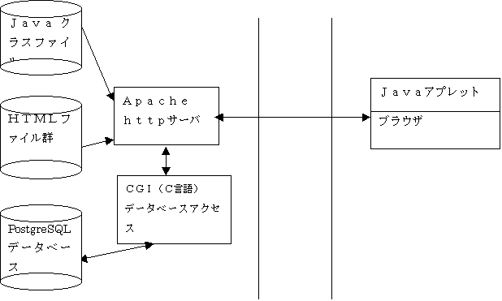

prev head next 
２ 環境・ツール
このシステムの動作条件・開発環境・ツール・手法について説明します。
まず、できるだけ多くの人に利用できることを考えました。
それだけではなく,費用的に個人で負担できること、私がそこそこのノウハウを
もっていて、作成可能というのも重要な要素でして、必ずしも理想的な環境・ツ
ールとなってないかもしれませんが、、、
タダのソフトの寄せ集めですね。
下に図がありますが、ブラウザでＵＲＬを参照するとＪａｖａのクラスファイ
ルがロードされ動作します。
操作に応じてサーバ側のＣＧＩを起動し、ＣＧＩは必要に応じてＰｏｓｔｇｒ
ｅＳＱＬのデータベースにアクセスし、結果を返します。
ＣＧＩから返される内容をＪａｖａで編集などしてブラウザに表示する形態と
なっています。
図２
サーバ側 インタネット クライアント側
２−１ クライアント
まず、どこでも簡単に使えるという観点から、クライアントソフトはＪａｖａ
アプレットにしました。インタネット環境であれば、簡単にシステムが使える。
という発想でしたが、使用するＯＳ環境、ブラウザによっては問題があります。
詳細はこちらを参照してください。
Ｊａｖａは一度書けば、どこでも動くという理想のソフトですが、現実はなか
なかついていってないというのが、事実です。
ですが、インストールしなくてもブラウザ上で容易に任意のアプリケーションを
実行できるのはＪａｖａのメリットだとおもいます。
ＪＤＫは１．１をベースに開発しています。
Javaの開発ツールなんですがレイアウトマネージャーは使用してないので、画
面レイアウトの確認にJBuilder Personalを使用してます。
２−２ サーバ
これは迷いなくＬｉｎｕｘで、ＤＢサーバはＰｏｓｔｇｒｅＳＱＬを採用しま
した。タダというのは大きいですが、このシステムを開発・運用する上で最適な
選択だとおもいます。
サーバ側のソフトはＣ言語でＰｏｓｔｇｒｅＳＱＬの埋め込みＳＱＬを使用し
たものとなっています。この点は作成者の得意分野というところに大きく影響さ
れています。込み入った処理や速度を要求される部分はあまりないのでｐｇｂａ
ｓｈを利用してもできたとおもいますし、Ｊａｖａを使って、クライアントと統
一したほうがよかったかともおもっています。
２−３ クライアント・サーバ間通信
私としてはソケットを使うなんてやりたかったのですが、これはＰｒｏｘｙ
経由でしか外部インタネットにアクセスできない環境で動作させるシステムを作
成するのは困難（なんかいい方法あったら教えて）なので、ＣＧＩという形で実
現しました。これであれば、Ｐｒｏｘｙ経由でもアクセス可能です。
全体的にいうと、Ｊａｖａサーブレットで実現したほうがよかったかなー
とか、ＪａｖａＳｃｒｉｐｔだともっと簡単にできるのでは（よくわかってない
ですけど）考えることもあるのですが、この方式で特に問題なくシステム化けで
きています。
２−４ マスターメンテ
あと、上の図にはないですがデータメンテナンス用にＯＤＢＣ経由でＷｉｎｄ
ｏｗｓのＡｃｃｅｓｓより、ＰｏｓｔｇｒｅＳＱＬデータベースにアクセスし、
スコア、リゾートといったマスターデータの保守をおこないます。
データ結果の集計機能などＡｃｃｅｓｓで作成しようかと考えています。
Ａｐａｃｈｅ、ＰｏｓｔｇｒｅＳＱＬなどのバージョンについては”現環境”
に説明していますが、さほどバージョンによる問題はないとおもいます。
ＪａｖａはＪＤＫ１．１以上をサポートしていないと動作しません。
prev head next
{kind=link}